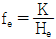
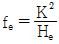
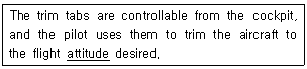
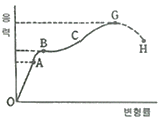
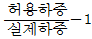
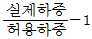
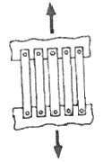

항공기체정비기능사 (2015-10-10 기출문제)
1과목: 비행원리
1. 항력이 D kgf 인 비행기가 속도 Vm/s등속 수평비행을 하기 위한 필요마력(PS)을 구하는 식은?
- DV/75
- 75/DV
- 75D/V
- 75V/D
(정답률: 71%)

2. 날개길이가 10m, 평균시위길이가 1.8m인 항공기 날개의 가로세로비(Aspect ratio)는 약 얼마인가?
- 0.18
- 2.8
- 5.6
- 18.0
(정답률: 60%)
3. 레이놀즈수의 영향을 미치는 요소가 아닌 것은?
- 유체의 밀도
- 유체의 압력
- 유체의 흐름속도
- 유체의 점성
(정답률: 56%)
4. 조종간과 승강키가 기계적으로 연결되어 있을 경우조종력과 승강키의 힌지 모멘트의 관한 관계식으로 옳은 것은? (단, fe:조종력, he:승강키 힌지모멘트, K:조종계통의 기계적 장치에 의한 이득이다.)

- fe = K - He

- fe = K × He
(정답률: 63%)
5. 헬리콥터에서 균형(Trim)을 이루었다는 의미를 가장 옳게 설명한 것은?
- 직교하는 두 개의 축에 대하여 힘의 합이 “0“이 되는 것
- 직교하는 두 개의 축에 대하여 힘과 모멘트의 합이 각각 “1“ 이 되는 것
- 직교하는 세 개의 축에 대하여 힘과 모멘트의 합이 각각 “0“이 되는 것
- 직교하는 3개의 축에 대하여 모든 방향의 힘의 합이 “1”이 되는 것
(정답률: 75%)
6. 다음 중 비행기의 가로안정에 가장 큰 영향을 미치는 것은?
- 동체의 모양
- 날개의 쳐든각
- 기관의 장착위치
- 플랩(flap)의 장착위치
(정답률: 86%)
7. 이용마력과 필요마력이 같아져 상승률이 “0” 이 되는 고도를 무엇이라 하는가?
- 운용 상승한계
- 실용 상승한계
- 실제 상승한계
- 절대 상승한계
(정답률: 73%)
8. 항공 중량이 5000kg 일 때 2G의 하중계수 (Load factor)가 가해지면 항공기에 미치는 전체 하중의 몇 kg인가?
- 2500
- 5000
- 7500
- 10000
(정답률: 78%)
9. 유관의 입구지름이 20cm이고 출구의 지름이 40cm 일 때 입구에서의 유체속도가 4m/s이면 출구에서의 유체속도는 약 몇m/s인가?
- 1
- 2
- 3
- 16
(정답률: 51%)
10. 헬리콥터의 기관이 정지하여 자동회전을 할 때 회전날개의 회전수는 어떻게 변화되는가?
- 지속적으로 감소한다.
- 지속적으로 증가한다.
- 일정 높이까지는 감소되면서 하강하고 그 후 일정하게 증가한다.
- 일정 높이까지는 감소되면서 하강하고 그 후 일정속도를 유지한다.
(정답률: 75%)
11. 다음중 프로펠러 깃의 시위방향의 압력중심(C.P) 위치에 의해 주로 발생되는 모멘트로 가장 옳은 것은?
- 공기력에 의한 굽힘 모멘트
- 공기력에 의한 비틀림 모멘트
- 회전력에 의한 굽힘 모멘트
- 회전력에 의한 비틀림 모멘트
(정답률: 56%)
12. 수평꼬리 날개에 부착된 조종면을 무엇이라 하는가?
- 승강키
- 플랩
- 방향키
- 도움날개
(정답률: 73%)
13. 날개면상에 초음속 흐름이 형성되면 충격파가 발생하게 되는데 이 때 충격파 전후면에서의 압력, 밀도, 속도의 관계로 옳은 것은?
- 충격파 앞의 압력과 속도는 충격파 뒤보다 크다.
- 충격파 앞의 압력과 밀도는 충격파 뒤보다 작다.
- 충격파 앞의 밀도와 속도는 충격파 뒤보다 작다.
- 충격파 앞의 밀도,압력 및 속도는 충격파 뒤보다 크다.
(정답률: 52%)
14. 비행기가 정상선회를 할 때 비행기에 작용하는 원심력과 구심력의 관계에 대하여 옳게 설명한 것은?
- 두 힘의 크기가 같고 방향도 같다.
- 두 힘은 크기가 다르고 방향이 같다.
- 두 힘은 크기가 같고 방향이 반대이다.
- 두 힘은 크기가 다르고 방향이 반대이다.
(정답률: 76%)
15. 국제민간항공기구(ICAO)에서 정하는 국제표준대기에 대한 설명으로 옳은 것은?
- 항공기의 설계, 운용에 기준이 되는 대기 상태로서 지역 및 고도에 관계없이 750mmHg, 온도가15℃인 상태를 말한다.
- 항공기의 비행에 가장 이상적인 대기 상태로서 압력이 750mmHg,온도가 15℃인 상태를 말한다.
- 항공기의 설계, 운용에 기준이 되는 대기 상태로서 같은 고도에 대한 표준 압력, 밀도, 온도 등 항상 같다.
- 해면상의 대기상태를 말하며 항공기의 설계 및 운용의 기준이 된다.
(정답률: 60%)
16. 안내 및 구급용 치료 설비 등을 나타내는 표지의 색은?
- 녹색
- 적색
- 청색
- 황색
(정답률: 88%)
17. 정밀 측정기기의 경우 규정된 기간 내에 정기적으로 공인기관에서 검·교정을 받아야 하는데 이때“검·교정”을 의미하는 것은?
- Check
- Calibration
- Repair
- Maintenance
(정답률: 63%)
18. 오픈앤드렌치로 작업할 수 없는 좁은 장소의 작업에 사용되며, 적절한 핸들과 익스텐션 바와 함께 사용하는 그림과 같은 공구의 명칭은?
- 크로풋
- 디프 소켓
- 어댑터
- 알렌 렌치
(정답률: 75%)
19. 한쪽 물림 턱은 고정되어 있고 다른 쪽 턱은 손잡이에 설치된 나사형 스크루를 조작하여 렌치의 개구부 크기를 조절하는 렌치는?
- 박스렌치(Box Wrench)
- 래칫렌치(Ratchet Wrench)
- 콤비네이션렌치(Combination Wrench)
- 어드저스터블렌치(Adjustable Wrench)
(정답률: 58%)
20. 부식 환경에서 금속의 가해지는 반복 응력에 의한 부식이며, 반복 응력이 작용하는 부분의 움푹 파인곳의 바닥에서부터 시작되는 부식은?
- 점 부식
- 피로 부식
- 입자간 부식
- 찰과 부식
(정답률: 78%)
2과목: 항공기정비
21. 항공기 견인시(towing)시 주의해야할 사항으로 옳은 것은?
- 항공기를 견인할 때에는 규정속도를 초과해서는 안된다.
- 견인차에는 견인 감독자가 함께하여 항공기를 견인해야 한다.
- 항공사 직원이라면 누구나 견인차량을 운전 할 수 있다.
- 지상감시자는 항공기 동체의 전방에 위치하여 견인이 끝날 때까지 감시해야한다.
(정답률: 73%)
22. 세라믹, 플라스틱, 고무로 된 항공기 재료를 검사할 때 가장 적절한 비파괴검사는?
- 자분탐상검사
- 색조침투검사
- 와전류탐상검사
- 항공기 대개조
(정답률: 70%)
23. 항공기 또는 그와 관련된 대상의 상태와 기능이 정상인지 확인하는 정비 행위는?
- 수리
- 점검
- 개조
- 오버홀
(정답률: 87%)
24. 일반적인 구조 부재용으로 열처리를 하지 않은 상태에서 보편적으로 사용하는 리벳은?
- 1100 리벳(A)
- 모넬 리벳(M)
- 2117- T 리벳(AD)
- 2024- T 리벳(DD)
(정답률: 50%)
25. 항공기의 지상 취급 및 안전에 관한 설명으로 틀린 것은?
- 항공기 가스터빈기관의 지상 작동시 흡배기지역의 접근을 피한다.
- 공항에는 항공기, 건물 등의 화재 발생에 대비하여 공항 소방대를 운영하고 있다.
- 항공기 급유시 일정 거리 이내에서 인화성 물질을 취급해서는 안된다.
- 산소로 이루어진 고압가스는 가연성 물질이 아니기 때문에 화재 및 폭발로부터 안전하다.
(정답률: 89%)
26. 코인태핑 검사에 대한 설명으로 틀린 것은?
- 동전으로 두드려 소리로 결함을 찾는 검사이다.
- 허니컴 구조 검사를 하는 가장 간단한 검사이다.
- 숙련된 기술이 필요 없으며 정밀한 장비가 필요하다.
- 허니컴 구조에서는 스킨분리(Skin delamination) 결함을 점검할 수 있다.
(정답률: 76%)
27. 다음 중 항공기 기체의 수명을 연장하는 가장 쉬우면서도 적극적인 방법은?
- 오버홀
- 수리
- 세척 및 방부처리
- 점검
(정답률: 67%)
28. 항공기 급유 작업 중 기름유출로 화재가 발생하였다면 이때 사용해서는 안되는 소화기는?
- CO2소화기
- 건조사
- 포말소화기
- 일반물소화기
(정답률: 81%)
29. 다음중 감항성에 대한 설명으로 가장 옳은 것은?
- 쉽게 장·탈착 할 수 있는 종합적인 부품정비
- 항공기에 발생되는 고장 요인을 미리 발견하는 것
- 항공기가 운항 중에 고장 없이 그 기능을 정확하고 안전하게 발휘할 수 있는 능력
- 제한 시간에 도달되면 항공 기재의 상태와 관계없이 점검과 검사를 수행하는 것
(정답률: 80%)
30. 비어있는 공간으로 압력을 가해서 실링(Sealing)하는 방법을 무엇이라 하는가?
- 필렛(Fillet)실링
- 페잉(Faying)실링
- 인젝션(Injection)실링
- 프리코트(Precoat)실링
(정답률: 61%)
31. 항공기세척제로 사용되는 메틸에틸케톤에 대한 설명이 아닌 것은?
- 휘발성이 강하다.
- MEK 라고 한다.
- 금속 세척제로도 이용한다.
- 세척된 표면상에 식별할 수 있는 막을 남긴다.
(정답률: 64%)
32. 아르곤이나 헬륨가스 안에서 전극와이어를 일정한 속도로 토치에 공급하여 와이어와 모재사이에 아크를 발생시키고 나심선을 스프레이상태로 용융하여 용접을 하는 방법은?
- 아크용접
- 가스용접
- 서브머지드 아크용접
- 불활성가스 금속아크용접
(정답률: 59%)
33. 밑줄 친 부분의 의미로 옳운 것은?

- 고도
- 자세
- 방향
- 위치
(정답률: 74%)
34. 볼트와 너트를 체결 시 토크 값을 정하는 요소가 아닌 것은?
- 토크렌치의 길이
- 볼트, 너트의 재질
- 볼트, 너트 나사의 형식
- 볼트, 너트의 인장력, 전단력
(정답률: 59%)
35. 마이크로미터의 구성품 중 아들자의 눈금이 새겨진 회전 원통으로서 측정면의 이동을 가능하게 해 주는 구성품은?
- 심블
- 클램프
- 배럴
- 앤빌과 스핀들
(정답률: 58%)
36. 지상진동시험을 할 경우 외부 하중의 진동수와 고유진동수가 같게 되어 구조물에 큰 범위를 발생시키는 현상은?
- 공진
- 돌풍하중
- 파단
- 단주기 진동
(정답률: 73%)
37. 항공기 손상부위의 위치를 표시 할 때 WL(Water Line)이 나타내는 것은?
- 항공기 날개의 위치를 나타낸다.
- 항공기 높이의 위치를 나타낸다.
- 항공기 도움날개의 위치를 나타낸다.
- 항공기의 좌우로 측정된 거리를 나타낸다.
(정답률: 58%)
38. 주철에 대한 설명으로 가장 옳은 것은?
- 절연성이 매우 크다.
- 담금질성이 우수하다.
- 단조, 압연, 인발에 부적합하다.
- 주조 후 자연시효 현상이 일어나지 않는다.
(정답률: 49%)
39. 항공기의 영연료무게(Zero fuel weight)란 무엇인가?
- 항공기의 총무게에서 자기무게를 뺀 중량
- 항공기의 자기무게에서 연료무게를 뺀 무게
- 항공기의 총무게에서 사용불능의 연료무게를 뺀 항공기의 중량
- 항공기의 총무게에서 연료무게를 뺀 항공기의 중량
(정답률: 65%)
40. 항공기가 지상 활주 중 지면과 타이어사이의 마찰에 의하여 착륙장치의 바퀴 선회축 좌우방향으로 진동이 발생하는데 이 진동을 무엇이라고 하는가?
- 저주파 진동
- 댐퍼(damper)
- 고주파 진동
- 시미(shimmy)
(정답률: 67%)
3과목: 항공기체
41. 굽힘이나 변형이 거의 일어나지 않고 부서지는 금속의 성질을 무엇이라 하는가?
- 연성(Ductility)
- 취성(Brittleness)
- 인성(Toughness)
- 전성(Malleability)
(정답률: 76%)
42. 재료의 응력과 변형률의 관계를 재료 시험을 통하여 얻을 때, 가장 보편적으로 시행하는 재료 시험은?
- 전단시험
- 충격시험
- 인장시험
- 압축시험
(정답률: 50%)
43. 그림과 같은 응력-변형률 곡선의 각 기호와 설명 또는 의미가 틀리게 짝지어진 것은?

- B:항복점
- BC:비례한도
- G:극한강도
- OA:후크의 법칙 성립
(정답률: 57%)
44. 조종용 케이블에서 와이어나 스트랜드가 굽어져 영구 변형되어 있는 상태를 무엇이라 하는가?
- 버드 케이지(Bird cage)
- 킹크 케이블(KInk cable)
- 와이어 절단Broken wire)
- 와이어 부식(Corrosion wire)
(정답률: 67%)
45. 기체구조에 부착되는 벌집구조부 알루미늄 코어의 손상 시 대체용으로 주로 쓰이는 벌집구조부 코어의 재질은?
- 마그네슘강
- 티타늄강
- 스테인리스강
- 유리섬유
(정답률: 49%)
46. 다음 중 헬리콥터 회전날개 깃의 피치를 변화시키는 것과 가장 관계 깊은 것은?
- 페더링 힌지
- 댐퍼
- 플래핑 힌지
- 항력 힌지
(정답률: 49%)
47. 도면에서 도면 이름, 도면 번호, 쪽수, 척도 등을 기록하는 영역은?
- 도면(Drawing)
- 표제란(Title block)
- 변경란(Revision block)
- 일반 주석란(General notes)
(정답률: 79%)
48. 헬리콥터에서 수직 핀(Vertical fin)에 대한 설명으로 틀린 것은?
- 수직 핀은 전진비행 시 수평을 유지시킨다.
- 테일붐 위쪽에 있는 핀은 회전날개에서 발생하는 토크를 상쇄시키는 데 기여한다.
- 테일붐 위쪽에 있는 핀은? 아래쪽의 수직핀과 날개골의 형태가 비대칭 구조로 되어 있다.
- 수직 핀은 착륙 시 꼬리 회전날개가 손상되는 것을 방지하기 위해 수직 핀 아래쪽에 꼬리회전날개 보호대가 설치되어 있다.
(정답률: 41%)
49. 헬리콥터의 동력 구동축에 고장이 생기면 고주파수의 진동이 발생하게 되는 원인이 아닌 것은?
- 평형 스트립의 결함
- 구동축의 불량한 평형상태
- 구동축의 장착상태의 불량
- 구동축 및 구동축 커플링의 손상
(정답률: 45%)
50. 황이 많이 함유된 탄소강의 적열, 메짐(Red shortness)을 방지하기 위하여 증가시켜야 하는 것은?
- 인
- 망간
- 실리콘
- 마그네슘
(정답률: 56%)
51. 헬리콥터의 운동 중 동시피치레버(collective pitch lever)로 조종하는 운동은?
- 수직방향운동
- 전진운동
- 방향조종운동
- 좌·우운동
(정답률: 64%)
52. 다음 중 소성 가공법이 아닌 것은?
- 단조
- 압출
- 용접
- 인발
(정답률: 66%)
53. 항공기에 가해지는 모든 하중을 스킨(Skin)이 담당하는 구조형식은?
- Monocoque Type
- Pratt Truss Type
- Warren Truss Type
- Semi-Monocoque Type
(정답률: 67%)
54. 안전여유를 구하는 식으로 옳은 것은?(다)
- 허용하중×실제하중
- 허용하중+실제하중


(정답률: 64%)
55. 날개에 엔진을 장착하는 경우 가장 큰 장점은?
- 날개의 파일론을 동체에 설치하므로 날개의 무개를 감소시킨다.
- 날개의 공기역학적 성능이 감소시키지 않고 항공기의 비행성능을 개선시킨다.
- 날개의 날개보를 동체에 설치하지 않으므로 항공기 무게를 감소시킨다.
- 날개의 날개보에 파일론을 설치하므로 항공기 무게를 감소시킨다.
(정답률: 35%)
56. 트러스형 날개의 구성품이 아닌 것은?
- 리브
- 날개보
- 응력외피
- 보강선
(정답률: 45%)
57. 동체 앞뒤에 배치되며 방화벽 또는 압력벽으로 사용되기도 하며, 날개나 착륙장치 등의 장착부위로도 사용되는 것은?
- 외피
- 프레임
- 스트링어
- 벌크헤드
(정답률: 65%)
58. 헬리콥터의 스키드 기어형 착륙장치에서 스키드 슈(Skid shoe)의 주된 사용 목적은?
- 회전날개의 진동을 줄이기 위해
- 스키드의 부식과 손상의 방지를 위해
- 스키드가 지상에 정확히 닿게 하기 휘해
- 휠을 스키드에 장착할 수 있게 하기 위해
(정답률: 66%)
59. 페일 세이프(Fail Safe)구조로 많은 수의 부재로 되어 있으며 각각의 부재는 하중을 분담하도록 설계되어 있는 그림과 같은 구조는?

- 이중구조(Double structure)
- 동력 부스터(Back-up structure)
- 다경로 하중 구조(Redundant structure)
- 하중 경감 구조(Load dropping structure)
(정답률: 79%)
60. 금속침투법, 담금질법, 침탄법, 질화법 등은 무엇을 하는 방법인가?
- 부식방지
- 재료시험
- 비파괴 검사
- 표면경화
(정답률: 69%)
PS = (항력 × 속도) ÷ 75
여기서, 항력은 D이고 속도는 Vm/s이므로,
PS = (D × Vm/s) ÷ 75
따라서 정답은 "DV/75"입니다.